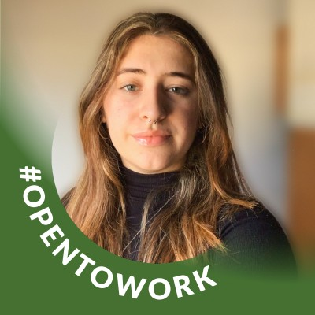
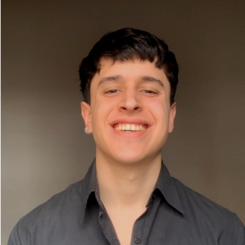
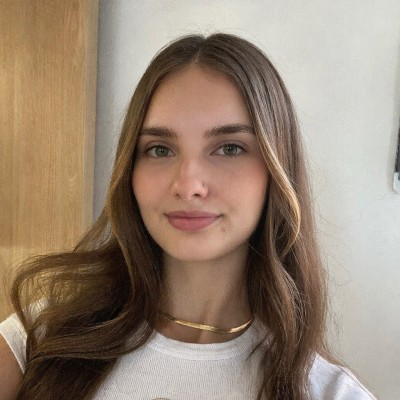
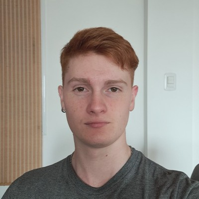
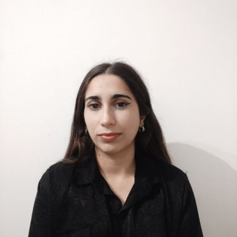
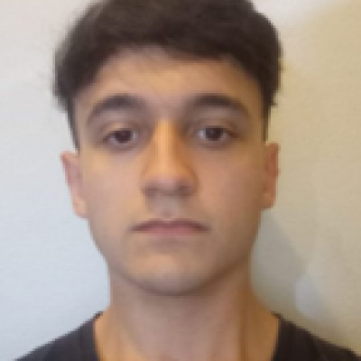

Sistema de busqueda y rescate con drones,
vision artificial y telemetria en tiempo real
Las operaciones de busqueda y rescate en areas remotas, montañas o post-desastre dependen de equipos humanos limitados, condiciones climaticas adversas y una ventana de tiempo critica donde cada minuto cuenta.
Equipos a pie cubriendo terreno celda por celda, sin capacidad de vision nocturna ni termica, con comunicacion precaria y fatiga acumulada. Las aeronaves tripuladas son caras y no siempre estan disponibles.
Un drone autonomo con camara RGB y simulacion termica que recorre una grilla de busqueda de forma sistematica, detecta personas con inteligencia artificial (YOLO) y envia alertas geolocalizadas en tiempo real a un centro de comando web.
Seis integrantes trabajando con Scrum durante 6 sprints, combinando backend, frontend, hardware e inteligencia artificial.






Setup, repos, CI, mapa + trakeo, server HTTP en ESP32-CAM
YOLO, grilla de exploracion, control de vuelo PID
Persistencia de misiones y detecciones, carga de mision
Estadisticas, auth de usuario, pruebas de vuelo
Conexion dron-app, refactor vuelo autonomo, demo
Roles de usuario, modo solo lectura, tests E2E
Frontend, Backend e IoT/Hardware comunicados por WebSocket, REST y UDP
Dashboard en tiempo real con mapa, video, telemetria, alertas, galeria de capturas y estadisticas.
API asincrona con vision artificial, motor de grilla, simulacion de vuelo y doble base de datos.
Firmware ESP32 con GPS, control PID de motores, servidor WiFi, camara MJPEG y telemetria UDP.
Lo que el sistema hace de punta a punta
Posicion GPS, altitud, velocidad, bateria y estado del drone por WebSocket. Compatible con telemetria real del ESP32 y modo simulado.
YOLOv8 sobre frames RGB + simulacion termica. Fusion de ambas fuentes para clasificar confianza en high, medium o low.
Leaflet con trail de vuelo, grilla de cobertura (unexplored / explored / detection) y marcadores de capturas geolocalizadas.
Joystick virtual para throttle, pitch y roll. Comandos UDP al ESP32 en tiempo real. Modos automatico, manual y hover.
Guardado automatico en MongoDB al detectar personas. Thumbnails, filtrado por mision y modal de detalle con bounding boxes.
Registro de misiones con cobertura, detecciones y bateria. Dashboard con graficos Recharts: evoluciones, distribuciones y comparativas.
Webcam, MJPEG del ESP32-CAM, archivos de video en rotacion o YouTube. Cambiable por config sin tocar codigo.
Un solo comando levanta backend, frontend (nginx) y MongoDB. Healthchecks, volumenes persistentes y variables de entorno.
Desde la configuracion hasta el reporte final — y que cambia en un escenario real
El operador define nombre, coordenadas GPS de inicio, altitud de vuelo y tamaño de grilla. Presets rapidos para ubicaciones frecuentes (UNSAM, Aconcagua, Plaza de Mayo).
EN REAL → el coordinador delimita la zona de busqueda en segundos, sin planear rutas a manoEl drone (real o simulado) recorre la grilla en patron serpentina. La telemetria se transmite por WebSocket cada segundo. El mapa pinta las celdas a medida que se exploran. El operador puede tomar control manual cuando quiera.
EN REAL → cubre en minutos terreno que a pie llevaria horas, incluso de noche o en zona inaccesibleCada frame pasa por YOLO (RGB) y el simulador termico en paralelo (asyncio.to_thread). La fusion clasifica la confianza. Si es medium o high, se dispara una alerta con posicion GPS, se marca la celda, se guarda la imagen anotada en MongoDB y el registro en SQLite.
EN REAL → el rescatista no mira el video: el sistema le avisa donde mirar y reduce el error humano por fatigaAl finalizar se guardan cobertura, bateria final y todas las detecciones. El historial permite revisar cada mision, la galeria muestra las capturas con bounding boxes y el dashboard grafica tendencias y comparativas.
EN REAL → deja trazabilidad de que se cubrio y donde, util para coordinar relevos y auditar la operacionFrente a una persona perdida en montaña o a una zona post-inundacion, AeroSearch convierte una busqueda lenta, peligrosa y dependiente de gente en una sistematica, geolocalizada y trazable: amplia el area cubierta por hora, suma vision termica que el ojo no tiene, y libera a los equipos humanos para que actuen solo donde hay una deteccion concreta — ganando minutos dentro de la ventana critica de 72 horas.
Mirar el proyecto con honestidad: que tenemos a favor, que nos falta y que nos rodea
La matriz no quedo en un dibujo: nos dio prioridades. Asi atacamos las debilidades internas
Conclusion del FODA: hacer la matriz convirtio percepciones difusas en un backlog priorizado. Nos permitio atacar primero lo interno y controlable — tests, modularizacion, manejo de credenciales — y dejar explicito y a proposito lo que queda como deuda. El analisis no solo describio el proyecto: cambio como trabajamos.
Mas que codigo: una forma distinta de laburar
Hacer planning, review y retro sprint a sprint, en serio, cambia como encaras el proyecto. No es lo mismo verlo en una diapositiva que vivirlo seis veces seguidas.
Elegir que atacar primero y dejar el resto anotado. Muchas veces hubo tareas que se tuvieron que pasar al siguiente sprint, por falta de practica o por subestimar cuanto iban a tardar.
Ademas de dar coherencia a cuanto hace cada uno por sprint, permiten cuantificar quien esta aportando y quien no. No nos hizo falta usarlos para eso, el equipo funciono parejo, pero quedo claro que con esos numeros se detecta rapido si alguien esta trabajando o no.
De los seis, dos ya venian con experiencia en ESP32, pero igual hizo falta aprender bastante mas. El hardware no perdona: un cable mal puesto, una alimentacion inestable o algo mal soldado te tira abajo una tarde entera de pruebas.
Un proyecto grande sin un plan no es posible: se sostiene por un proceso constante de esfuerzo medido, no por talento individual.
El backlog priorizado nos dio direccion, los story points nos dieron honestidad, y el hardware (y el software) nos bajo a tierra — fue un proyecto complicado, y eso se nota.
Nos llevamos un producto que funciona — y, sobre todo, una forma de trabajar que podemos repetir en cualquier equipo.
Arranco como una idea quiza un poco mas simple, y termino siendo un producto que funciona de verdad para mas cosas de las que se penso en un inicio: hardware, firmware, IA, backend, frontend y bases de datos.